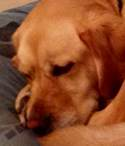
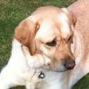

The sleeping dog: Let sleeping dogs lie is a proverb that means “don’t initiate trouble. If something that could be troublesome is quiet, then leave it alone”.

Off-duty guide dogs often wear a bell. Its ring helps the blind owner keep track of the dog’s location